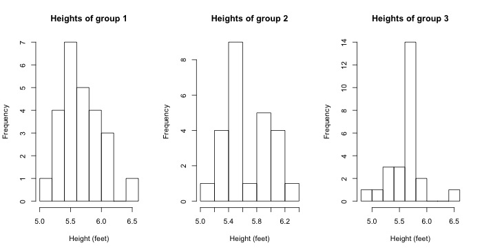

Measuring Uncertainty
Measures of Central Tendency and Spread
Mean, Median, Mode
Mean, median, and mode represent the three common ways of describing important features of a data set at a glance. The arithmetic mean of a sample, \( x_1, x_2, \ldots, x_n \), is denoted by \( \bar{x} \) (pronounced "x-bar"). For a sample of \( n \) observations, it is calculated:
\[ \bar{x} = \frac{x_1 +x_2+\ldots +x_n}{n} \]Alternately, it may be represented as:
\[ \bar{x} = \frac{\sum_i^n x_i}{n} \]This means we add up every item in a set of \( n \) items and then divide by however many items we added together. Here, the capital sigma indicates that we take a sum (that is, we add up all the values). This is the most commonly-used measure of central tendency, although it should never be used when dealing with ordinal or categorical data. (That is, ranked data—such as "rate these from best to worst"—or categories—such as male/female or religion. Although technically possible, the result will be difficult to interpret, if not impossible.)
The median of a set of data is, quite literally, the middle value. If we take a series of numbers, order them from smallest to largest, and pick the number that's right in the middle (think of a see-saw balancing at its fulcrum), then we have the median. This can be calculated in many of the same cases as the mean and is more resistent to outliers (values that are unusually far away from most other data points) than is the mean.
Finally, the mode is the most frequently-occurring number in a series of data. Usually, we will compute the mode when working with categorical data: for instance, it could tell us that the majority of survey respondents were female or were Jewish or lived in the Midwest.
If we want to calculate these in R, we would do something like this:
# First we will generate 200 random values
# with mean 0 and standard deviation 1
> set.seed(0)
> data <- rnorm(200, mean=0, sd=1)
# Now we will find the mean:
> mean(data)
[1] -0.01144155
# We can see that the mean of -0.011 is
# close to the value (0) we specified above.
# Next let's calculate the median
> median(data)
[1] -0.1061751
# We see that the median differs from the mean!
# That means that our data are a little skewed
# We'll talk about skewness in the next section.
Skewness and Mean vs. Median
To get an idea of skewness, let's make a histogram of those data that we just generated. If you aren't familiar with a histogram, it takes your data and counts how many data points fall within a certain range, giving you something like this:
The smooth line that you see above is the normal distribution; the columns represent our actual observations. As you can see, the two don't line up perfectly. Rather, our graph is stretched out to the right a bit. We call this stretching skewness: the idea that, rather than being perfectly symmetrical about the mean, out data are stretched out to the right or to the left. In cases where our data are stretched out to the right, we say that they are skewed right; when they are stretched to the left, we say they are skewed left.
Many times, as in this example, there isn't very much skewness and our data, even though they aren't perfect, are still fairly symmetrical. However, sometimes we will have strong outliers that really mess up that symmetry. For instance:
Here, we have a strong rightward skew. Now, let's go ahead and compare the means and medians of our two datasets:
# First we'll compare the means
> mean(data)
[1] -0.01144155
> mean(data2)
[1] 0.2489018
# And now the medians
> median(data)
[1] -0.1061751
> median(data2)
[1] -0.005767173
As you can see, both the mean and the median change. However, the median changes much less than the mean does. (There's a change of 0.26 in the means versus a change of 0.10 in the medians.) In casaes where you have strongly skewed data, it will often be better to describe them using the median rather than the mean: specifically, the median is what we call resistent to outliers. In other words, when you have a few outliers (numbers that are far away from every other data point), the median will be changed much less than the mean will.
Standard Deviation
Standard deviation (represented as \( s \) or \( \sigma \)) is a measure of dispersion: that is, it tells us how far from or close to the mean our data tend to be. A data set with a small standard deviation, for instance, tells us that most of our data points are fairly close together and are all near the mean. Alternately, a large standard deviation means that our data points are much more spread out. We can visualize this using three data sets, all with mean \( \mu = 0 \) but with different standard deviations:

Even though each of these three sets of data has the same mean (0), it's pretty clear that there are some big differences between each of them. This is why standard deviation is important to know and report: without it, you aren't going to be getting a complete picture of what your data look like. They could all be close to the mean, as in the graph on the far left, or they could be much more spread out, as in the graph on the right.
Now, before we can use standard deviations, we have to calculate them. The formula for standard deviation looks like:
\[ \sigma = \sqrt{\frac{1}{n}\sum_{i=1}^n\left(x_i-\mu\right)^2}\text{, where } \mu=\frac{1}{n}\sum_{i=1}^n(x_i) \]Let's unpack that: it's saying that we start by finding the mean (\( \mu \)) of the data. Next, we'll go ahead and take every data point and subtract the mean from it (the \( x_i-\mu \) part of the equation). So what we're doing is basically finding out how many units away from the mean each data point is. But there's a problem: some data points might give us a negative number, others a positive number. So we'll take that difference and raise it to the second power (remember, a negative number times a negative number is always equal to a positive number). Now we just repeat that for every other data point in our sample and add them all together.
So now we have summed up all of those squared differences, right? Next, we will divide by the number (\( n \)) of observations (just like when we calculated the mean) to get the average distance from the mean. But there's one last step before we're done: since we raised everything to the second power a couple steps ago, we have to undo that operation. To do this, we'll take the square root of everything, leaving us at last with the standard deviation.
Variance
In many ways, variance and standard deviation are two sides of the same coin. If you remember, standard deviation is calculated:
\[ \sigma = \sqrt{\frac{1}{n}\sum_{i=1}^n\left(x_i-\mu\right)^2}\text{, where } \mu=\frac{1}{n}\sum_{i=1}^n(x_i) \]Variance, then, is:
\[ \begin{eqnarray*} \sigma^2 &=& \frac{1}{n}\sum_{i=1}^n\left(x_i-\mu\right)^2 \\ &=& \left(\frac{1}{n}\sum_{i=1}^nx_i\right)-\mu^2\text{, where } \mu=\frac{1}{n}\sum_{i=1}^n(x_i) \end{eqnarray*} \]So, we can see that population variance is calculated exactly the same as is standard deviation, except we never take a square root at the end of it all. But if they're calculated so similarly and they both measure essentially the same thing, why would we use one over the other and why do we have both?
One big reason for using standard deviation instead of variance, at least in applied statistics, is that the standard deviation is in the same units as your data. (E.g., if you're looking at weights, the standard deviation is in pounds.) Variance, on the other hand, is in squared units. (So instead of pounds, you'd have a variance in pounds squared. That's less easy to interpret, isn't it?) Beyond this, standard deviation also gives us the 65-97-99.5% rule.
This rule tells us that 65% of all observations in a normal distribution will fall within 1 standard deviation of the mean; 97% will fall within 2 standard deviations of the mean; and 99.5% will fall within 3 standard deviations of the mean. We can illustrate this:
 The 68-97-99.5% rule states that nearly all observed data points will be within 3 standard deviations of the mean. This is often useful for flagging outliers or inappropriate distributions to fit your data to. Source: Wikipedia
The 68-97-99.5% rule states that nearly all observed data points will be within 3 standard deviations of the mean. This is often useful for flagging outliers or inappropriate distributions to fit your data to. Source: Wikipedia
So, for instance, if we wanted to find what proportion of our data would be more than 1 standard deviation above the mean, we would add 13.6%, 2.1%, and 0.1% to end up with 15.8% of our data being more than 1 standard deviation above the mean.
Interquartile Range
The last measure of spread that we will discuss is the interquartile range. This is most commonly used when the median used rather than the mean. This number is based off of what is known as the "5-number summary," defined as:
Minimum: The smallest value in your data setQ1: The value in your data set that is larger than 25% of all other values
Median: The median value in your data set
Q3: The value in your data set that is larger than 75% of all other values
Maximum: The maximum value in your data set
You'll quickly recognize this information if you're familiar with boxplots (if not, we cover them below). To derive the interquartile range (IQR) from these, we simply take Q3 - Q1. From the definitions above, we know that exactly 50% of our data points lie between these two values. Given this, the IQR can be said to be another measure of the dispersion of our data: instead of a 65-97-99.5% rule, here we have a 50-25-25% rule: 50% of our observations lie within the range given by the IQR; 25% lie above it; and 25% lie below it. As with standard deviation, a smaller IQR indicates a tighter spread of data (i.e., more of the data points are squished together) and a larger IQR indicates more variance of the data.
Finally, the IQR is often used to identify outliers in a data set. To do this, we will usually find our upper and lower cutoffs by:
\[ \begin{eqnarray*} \text{Upper} &=& Q3+1.5\cdot IQR \\ \text{Lower} &=& Q1-1.5\cdot IQR \end{eqnarray*} \]That is, any data point more than 1.5 times the IQR above Q3 or more than 1.5 times the IQR below Q1 can be considered suspect and possibly an outlier. Important to note, however, is that this isn't a hard-and-fast rule: there is no real reason that we use 1.5 times the IQR as a cutoff. (Actually, the statistician who came up with this measure chose 1.5 times because 1 seemed too small and 2 seemed too large.)
Sampling Distributions
Central Limit Theorem and Sampling Distributions
Does the central limit theorem ring any bells? Probably not. But it's still probably something that you've heard of before. Specifically, you may have heard of it in the context of regression to the mean. This is the idea that (let's use height as an example) if you randomly choose one adult male in the U.S., his height could very easily be 7'3". That's obvioualy a lot taller than most people. But the next person you choose will probably have a height less than the first guy's. And if you keep choosing more and more people and measuring their heights, pretty soon, the average height of everyone you chose will be pretty darned close to the actual national average height for adult males. More generally, the idea is that every now and then there will always be extreme scores. But every time you get one of those strong outliers, the next observation is almost certainly going to be less extreme and it is going to pull things back down to the population average.
The central limit theorem is sort of similar: it states that the distribution of an average tends to be normal, even if the population is not itself normal.
Make sense? Maybe not (that's okay!), so let's break it down a bit. Whenever we're talking about a distribution of averages, we call that a sampling distribution. To continue with our height example from above, let's say that we randomly choose 25 guys and measure their heights. Then we choose another 25 guys and measure their heights. Then we choose another 25 guys and measure their heights. Assuming that the mean male adult height is 5'8" with a 4" standard deviation (we have to represent that with decimals in R, so it becomes a mean of 5.67 feet and a standard deviation of 0.33 feet), our three samples might look like this:
We can see that there's a lot of variation among our three groups, right? And groups 2 and 3 don't really look all that normal. But, let's say that we take the average male height of each of our three samples. Now, let's repeat that with another 497 batches of 25 men each. If we make a histogram of the average height from each of those 500 groups, it will look like:
All of a sudden, we have a normal distribution with a mean height of 5.67 feet (or 5'8") and a standard deviation of 0.068 feet (or 0.81 inches). We see that the mean of our sampling distribution is exactly equal to the mean of our population: that's the central limit theorem in action.
Standard Error
You might have noticed that the standard deviation of the sampling distribution above was much smaller than the standard deviation of the actual population (0.81 inches versus 4 inches). That's because what we're looking at is actually the standard error, a specific term referring to the standard deviation of a sampling distribution. This will always be smaller than the standard deviation of the population and can be estimated by:
\[ \text{SE}_{\bar{x}}= \frac{s}{\sqrt{n}} \]Here, \(s\) is the sample standard deviation and \(n\) is the number of observations (that is, the number of samples—here, 500). As you can see, the standard error is always going to be smaller than the population's actual standard deviation. In short, the standard error is a measure of how far a sample mean is likely to be from the population mean; the standard deviation is a measure of how far an individual observation is likely to be from the sample mean.
Visualizing Data
Histograms
A histogram displays the number of observations that fall within a given range. For instance, in the height examples above, we would count the number of men in our sample between 5 feet and 5.2 feet and display them all in one column. Then we'd do the same for 5.2 to 5.4 feet, for 5.4 to 5.6 feet, and so on. This gives us something like:
hist(avgHeight)
Kernel Density Plots
A kernel density plot is similar to a histogram in that it shows us about what proportion of our sample is likely to be at any certain value. The big difference between kernel density plots and histograms is that density plots are continuous: whereas histograms take all of your data and lump them together in ranges, a density plot displays these data continuously. For instance, taking the same data that we used in our histogram example:
plot(density(avgHeight))
Comparing the two graphs, they tell about the same story. However, the kernel density plot isn't subject to issues of binning. Specifically, when using histograms, the width of the bins that you use (or the range of each column) can drastically impact your interpretation of the data. For instance, if we increase the number of bins, we get something like:
As the range of each bin varies, we can go from a nice-looking normal distribution to a much worse looking non-normal distribution. But with a kernel density plot, you remove those issues in interpretation:
As we can see, in reality, it actually is a roughly normal distribution with some funky skewness over to the right.
Boxplots
As discussed previously, boxplots are good to use when you're working with the median, interquartile range, and 5-number summary. These take that 5-number summary and present the data visually:
Here, the line on the far left is the minimum value, the left edge of the box is Q1, the line bisecting the box is the median, the right edge of the box is Q3, and the line to the far right is the maximum value. Any circles indicate the presence of outliers based on the IQR.
Exercises
- In R, execute the following code:
set.seed(0) height1 <- rnorm(25, 5.6667, 1/3) avgHeight <- NULL for(i in 1:500) { height <- rnorm(25, 5.6667, 1/3) avgHeight <- rbind(avgHeight, mean(height)) } - What are the mean and median values of
height1andavgHeight? What are their standard deviations? - What would we expect the standard error of avgHeight to be if we had 500 samples and a population standard deviation of 0.33 feet? Does our standard error differ from this estimate? Why do you think this might be?
- Prepare a histogram of
height1andavgHeight. Do they differ? Does either look problematic? (E.g., departures from normality) - Make a kernel density plot of
height1. Does it differ from the histogram? Which gives a better picture of the data? - Make a boxplot of
avgHeight. Are there any outliers present?
Additional Resources
- R script containing all commands used in examples throughout this chapter